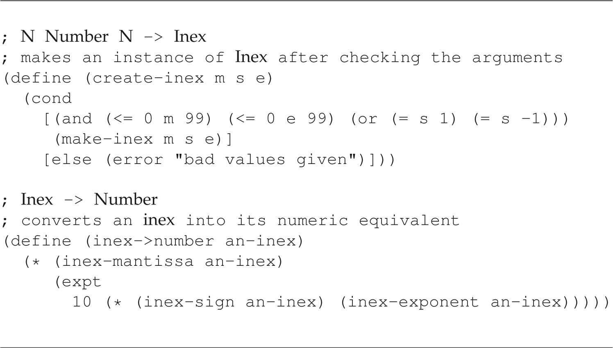
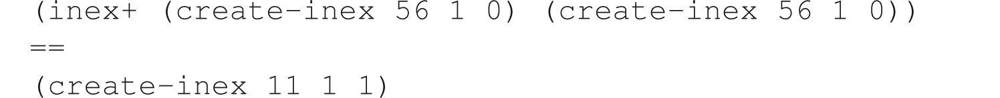
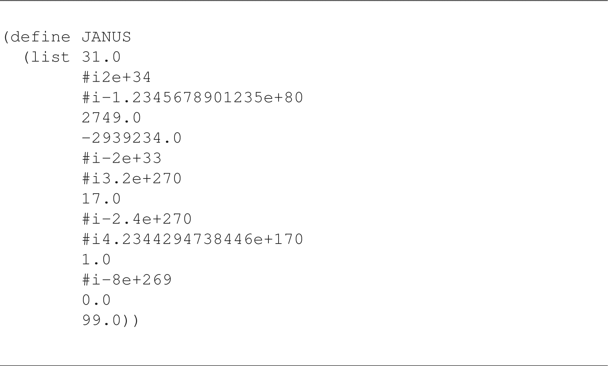
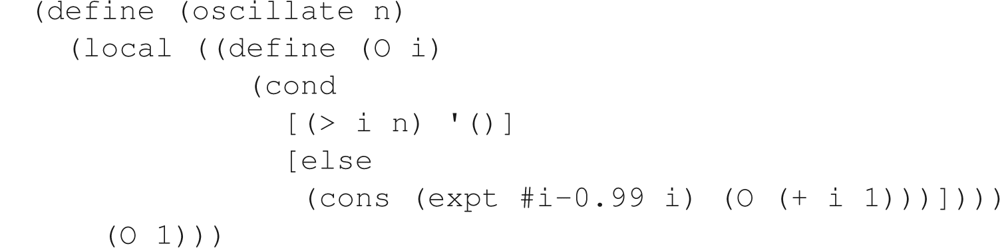
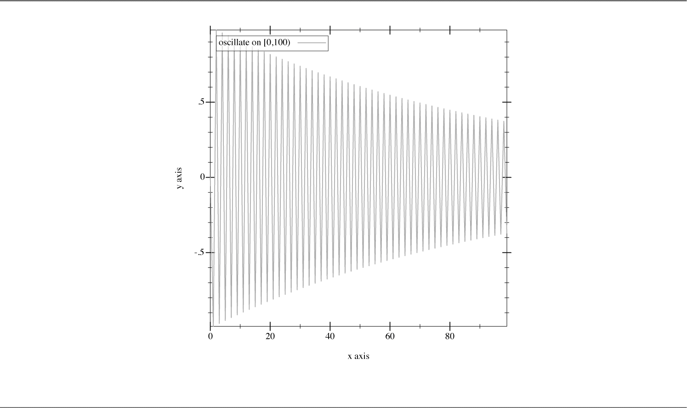

INTERMEZZO 4: THE NATURE OF NUMBERS
When it comes to numbers, programming languages mediate the gap between the underlying hardware and true mathematics. The typical computer hardware represents numbers with fixed-size chunks of data; they also come with processors that work on just such chunks. In paper-and-pencil calculations, we don’t worry about how many digits we process; in principle, we can deal with numbers that consist of one digit, 10 digits, or 10,000 digits. Thus, if a programming language uses the numbers from the underlying hardware, its calculations are as efficient as possible. If it sticks to the numbers we know from mathematics, it must translate those into chunks of hardware data and back—and these translations cost time. Because of this cost, most creators of programming languages adopt the hardware-based choice.
These chunks are called bits, bytes, and words.
This intermezzo explains the hardware representation of numbers as an exercise in data representation. Concretely, the first subsection introduces a concrete fixed-size data representation for numbers, discusses how to map numbers into this representation, and hints at how calculations work on such numbers. The second and third sections illustrate the two most fundamental problems of this choice: arithmetic overflow and underflow, respectively. The last one sketches how arithmetic in the teaching languages works; its number system generalizes what you find in most of today’s programming languages. The final exercises show how bad things can get when programs compute with numbers.
Fixed-Size Number Arithmetic
Suppose we can use four digits to represent numbers. If we represent natural numbers, one representable range is [0,10000). For real numbers, we could pick 10,000 fractions between 0 and 1 or 5,000 between 0 and 1 and another 5,000 between 1 and 2, and so on. In either case, four digits can represent at most 10,000 numbers for some chosen interval, while the number line for this interval contains an infinite number of numbers.
The common choice for hardware numbers is to use so-called scientific notation, meaning numbers are represented with two parts:
For pure scientific notation, the base is between 0 and 9; we ignore this constraint.
1. a mantissa, which is a base number, and
2. an exponent, which is used to determine a 10-based factor.
Expressed as a formula, we write numbers as
where m is the mantissa and e the exponent. For example, one representation of 1200 with this scheme is
another one is
In general, a number has several equivalents in this representation.
We can also use negative exponents, which add fractions at the cost of one extra piece of data: the sign of the exponent. For example,
stands for
To use a form of mantissa-exponent notation for our problem, we must decide how many of the four digits we wish to use for the representation of the mantissa and how many for the exponent. Here we use two for each plus a sign for the exponent; other choices are possible. Given this decision, we can still represent 0 as
The maximal number we can represent is
which is 99 followed by 99 0’s. Using the negative exponents, we can add fractions all the way down to
which is the smallest representable number. In sum, using scientific notation with four digits (and a sign), we can represent a vast range of numbers and fractions, but this improvement comes with its own problems.
To understand the problems, it is best to make these choices concrete with a data representation in ISL+ and by running some experiments. Let’s represent a fixed-size number with a structure that has three fields:
(define-struct inex [mantissa sign exponent])
; An Inex is a structure:
; (make-inex N99 S N99)
; An S is one of:
; -- 1
; -- -1
; An N99 is an N between 0 and 99 (inclusive).
Because the conditions on the fields of an Inex are so stringent, we define the function create-inex to instantiate this structure type definition; see figure 143. The figure also defines inex->number, which turns Inexes into numbers using the above formula.

Figure 143: Functions for inexact representations
Let’s translate the above example, 1200, into our data representation:
(create-inex 12 1 2)
Representing 1200 as 120 · 101 is illegal, however, according to our Inex data definition:
> (create-inex 120 1 1)
bad values given
For other numbers, though, we can find two Inex equivalents. One example is 5e-19:
> (create-inex 50 -1 20)
(make-inex 50 -1 20)
> (create-inex 5 -1 19)
(make-inex 5 -1 19)
Use inex->number to confirm the equivalence of these two numbers.
With create-inex it is also easy to delimit the range of representable numbers, which is actually quite small for many applications:
(define MAX-POSITIVE (create-inex 99 1 99))
(define MIN-POSITIVE (create-inex 1 -1 99))
The question is which of the real numbers in the range between 0 and MAX-POSITIVE can be translated into an Inex. In particular, any positive number less than
has no equivalent Inex. Similarly, the representation has gaps in the middle. For example, the immediate successor of
(create-inex 12 1 2)
is
(create-inex 13 1 2)
The first Inex represents 1200, the second one 1300. Numbers in the middle, say 1240, can be represented as one or the other—no other Inex makes sense. The standard choice is to round the number to the closest representable equivalent, and that is what computer scientists mean with inexact numbers. That is, the chosen data representation forces us to map mathematical numbers to approximations.
Finally, we must also consider arithmetic operations on Inex structures. Adding two Inex representations with the same exponent means adding the two mantissas:
(inex+ (create-inex 1 1 0) (create-inex 2 1 0))
==
(create-inex 3 1 0)
Translated into mathematical notation, we have
When the addition of two mantissas yields too many digits, we have to use the closest neighbor in Inex. Consider adding 55 · 100 to itself. Mathematically we get
but we can’t just translate this number naively into our chosen representation because 110 > 99. The proper corrective action is to represent the result as
Or, translated into ISL+, we must ensure that inex+ computes as follows:
More generally, if the mantissa of the result is too large, we must divide it by 10 and increase the exponent by one.
Sometimes the result contains more mantissa digits than we can represent. In those cases, inex+ must round to the closest equivalent in the Inex world. For example:

Compare this with the precise calculation:
Because the result has too many mantissa digits, the integer division of the result mantissa by 10 produces an approximate result:
This is an example of the many approximations in Inex arithmetic.
And inexact is appropriate.
We can also multiply Inex numbers. Recall that
Thus we get:
or, in ISL+ notation:
(inex* (create-inex 2 1 4) (create-inex 8 1 10))
==
(create-inex 16 1 14)
As with addition, things are not straightforward. When the result has too many significant digits in the mantissa, inex* has to increase the exponent:
(inex* (create-inex 20 1 1) (create-inex 5 1 4))
==
(create-inex 10 1 6)
And just like inex+, inex* introduces an approximation if the true mantissa doesn’t have an exact equivalent in Inex:
(inex* (create-inex 27 -1 1) (create-inex 7 1 4))
==
(create-inex 19 1 4)
Exercise 412. Design inex+. The function adds two Inex representations of numbers that have the same exponent. The function must be able to deal with inputs that increase the exponent. Furthermore, it must signal its own error if the result is out of range, not rely on create-inex for error checking.
Challenge Extend inex+ so that it can deal with inputs whose exponents differ by 1:
(check-expect
(inex+ (create-inex 1 1 0) (create-inex 1 -1 1))
(create-inex 11 -1 1))
Do not attempt to deal with larger classes of inputs than that without reading the following subsection. 
Exercise 413. Design inex*. The function multiplies two Inex representations of numbers, including inputs that force an additional increase of the output’s exponent. Like inex+, it must signal its own error if the result is out of range, not rely on create-inex to perform error checking.
Exercise 414. As this section illustrates, gaps in the data representation lead to round-off errors when numbers are mapped to Inexes. The problem is, such round-off errors accumulate across computations.
Design add, a function that adds up n copies of #i1/185. For your examples, use 0 and 1; for the latter, use a tolerance of 0.0001. What is the result for (add 185)? What would you expect? What happens if you multiply the result with a large number?
Design sub. The function counts how often 1/185 can be subtracted from the argument until it is 0. Use 0 and 1/185 for your examples. What are the expected results? What are the results for (sub 1) and (sub #i1.0)? What happens in the second case? Why?
Overflow
While scientific notation expands the range of numbers we can represent with fixed-size chunks of data, it is still finite. Some numbers are just too big to fit into a fixed-size number representation. For example,
can’t be represented because the exponent 500 won’t fit into two digits, and the mantissa is as large as legally possible.
Numbers that are too large for Inex can arise during a computation. For example, two numbers that we can represent can add up to a number that we cannot represent:
(inex+ (create-inex 50 1 99) (create-inex 50 1 99))
==
(create-inex 100 1 99)
which violates the data definition. When Inex arithmetic produces numbers that are too large to be represented, we speak of (arithmetic) overflow.
When overflow takes place, some language implementations signal an error and stop the computation. Others designate some symbolic value, called infinity, to represent such numbers and propagate it through arithmetic operations.
Note If Inexes had a sign field for the mantissa, then two negative numbers can add up to one that is so negative that it can’t be represented either. This is called overflow in the negative direction. End
Exercise 415. ISL+ uses +inf.0 to deal with overflow. Determine the integer n such that
(expt #i10.0 n)
is an inexact number while (expt #i10. (+ n 1)) is approximated with +inf.0. Hint Design a function to compute n.
Underflow
At the opposite end of the spectrum, there are small numbers that don’t have a representation in Inex. For example, 10−500 is not 0, but it’s smaller than the smallest non-zero number we can represent. An (arithmetic) underflow arises when we multiply two small numbers and the result is too small for Inex:
(inex* (create-inex 1 -1 10) (create-inex 1 -1 99))
==
(create-inex 1 -1 109)
which signals an error.
When underflow occurs, some language implementations signal an error; others use 0 to approximate the result. Using 0 to approximate underflow is qualitatively different from picking an approximate representation of a number in Inex. Concretely, approximating 1250 with (create-inex 12 1 2) drops significant digits from the mantissa, but the result is always within 10% of the number to be represented. Approximating an underflow, however, means dropping the entire mantissa, meaning the result is not within a predictable percentage range of the true result.
Exercise 416. ISL+ uses #i0.0 to approximate underflow. Determine the smallest integer n such that (expt #i10.0 n) is still an inexact ISL+ number and (expt #i10. (- n 1)) is approximated with 0. Hint Use a function to compute n. Consider abstracting over this function and the solution of exercise 415.
*SL Numbers
Most programming languages support only approximate number representations and arithmetic for numbers. A typical language limits its integers to an interval that is related to the size of the chunks of the hardware on which it runs. Its representation of real numbers is loosely based on the sketch in the preceding sections, though with larger chunks than the four digits Inex uses and with digits from the 2-based number system.
Inexact real representations come in several flavors: float, double, extflonum, and so on.
The teaching languages support both exact and inexact numbers. Their integers and rationals are arbitrarily large and precise, limited only by the absolute size of the computer’s entire memory. For calculations on these numbers, our teaching languages use the underlying hardware as long as the involved rationals fit into the supported chunks of data; it automatically switches to a different representation and to a different version of the arithmetic operations for numbers outside of this interval. Their real numbers come in two flavors: exact and inexact. An exact number truly represents a real number; an inexact one approximates a real number in the spirit of the preceding sections. Arithmetic operations preserve exactness when possible; they produce an inexact result when necessary. Thus, sqrt returns an inexact number for both the exact and inexact representation of 2. In contrast, sqrt produces an exact 2 when given exact 4 and #i2.0 for an input of #i4.0. Finally, a numeric constant in a teaching program is understood as an exact rational, unless it is prefixed with #i.
Plain Racket interprets all decimal numbers as inexact numbers; it also renders all real numbers as decimals, regardless of whether they are exact or inexact. The implication is that all such numbers are dangerous because they are likely to be inexact approximations of the true number. A programmer can force Racket to interpret numbers with a dot as exact by prefixing numerical constants with #e.
At this point, you may wonder how much a program’s results may differ from the true results if it uses these inexact numbers. This question is one that early computer scientists struggled with a lot, and over the past few decades these studies have created a separate field, called numerical analysis. Every computer scientist, and indeed, every person who uses computers and software, ought to be aware of its existence and some of its basic insights into the workings of numeric programs. As a first taste, the following exercises illustrate how bad things can get. Work through them to never lose sight of the problems of inexact numbers.
For an accessible introduction—using Racket—read Practically Accurate Floating-Point Math, an article on error analysis by Neil Toronto and Jay McCarthy. It is also fun to watch Debugging Floating-Point Math in Racket, Neil Toronto’s RacketCon 2011 lecture, available on YouTube.
Exercise 417. Evaluate (expt 1.001 1e-12) in Racket and in ISL+. Explain what you see.
Exercise 418. Design my-expt without using expt. The function raises the first given number to the power of the second one, a natural number. Using this function, conduct the following experiment. Add
(define inex (+ 1 #i1e-12))
(define exac (+ 1 1e-12))
to the definitions area. What is (my-expt inex 30)? And how about (my-expt exac 30)? Which answer is more useful?
Exercise 419. When you add two inexact numbers of vastly different orders of magnitude, you may get the larger one back as the result. For example, if a number system uses only 15 significant digits, we run into problems when adding numbers that vary by more than a factor of 1016:
but the closest representable answer is 1016.
At first glance, this approximation doesn’t look too bad. Being wrong by one part in 1016 (ten million billion) is close enough to the truth. Unfortunately, this kind of problem can add up to huge problems. Consider the list of numbers in figure 144 and determine the values of these expressions:
• (sum JANUS)
• (sum (reverse JANUS))
• (sum (sort JANUS <))

Figure 144: A Janus-faced series of inexact numbers
Assuming sum adds the numbers in a list from left to right, explain what these expressions compute. What do you think of the results?
Generic advice on inexact calculations tells programmers to start additions with the smallest numbers. While adding a big number to two small numbers might yield the big one, adding small numbers first creates a large one, which might change the outcome:
> (expt 2 #i53.0)
#i9007199254740992.0
> (sum (list #i1.0 (expt 2 #i53.0)))
#i9007199254740992.0
> (sum (list #i1.0 #i1.0 (expt 2 #i53.0)))
#i9007199254740994.0
This trick may not work; see the JANUS interactions above.
In a language such as ISL+, you can convert the numbers to exact rationals, use exact arithmetic on those, and convert the result back:
(exact->inexact (sum (map inexact->exact JANUS)))
Evaluate this expression and compare the result to the three sums above. What do you think now about advice from the web?
Exercise 420. JANUS is just a fixed list, but take a look at this function:

Applying oscillate to a natural number n produces the first n elements of a mathematical series. It is best understood as a graph, like the one in figure 145. Run (oscillate 15) in DrRacket and inspect the result.

Figure 145: The graph of oscillate
Summing its results from left to right computes a different result than from right to left:
> (sum (oscillate #i1000.0))
#i-0.49746596003269394
> (sum (reverse (oscillate #i1000.0)))
#i-0.4974659600326953
Again, the difference may appear to be small until we see the context:
> (- (* 1e+16 (sum (oscillate #i1000.0)))
(* 1e+16 (sum (reverse (oscillate #i1000.0)))))
#i14.0
Can this difference matter? Can we trust computers?
The question is which numbers programmers should use in their programs if they are given a choice. The answer depends on the context, of course. In the world of financial statements, numerical constants should be interpreted as exact numbers, and computational manipulations of financial statements ought to be able to rely on the exactness-preserving nature of mathematical operations. After all, the law cannot accommodate the serious errors that come with inexact numbers and their operations. In scientific computations, however, the extra time needed to produce exact results might impose too much of a burden. Scientists therefore tend to use inexact numbers but carefully analyze their programs to make sure that the numerical errors are tolerable for their uses of the outputs of programs.